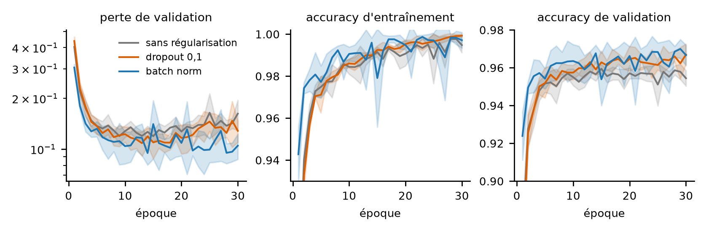
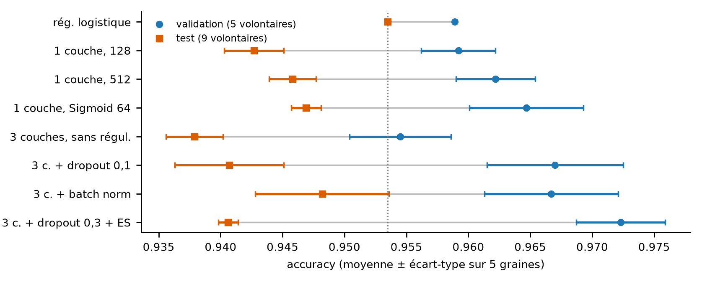
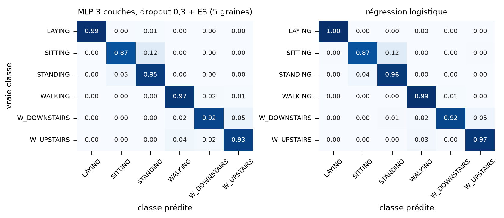
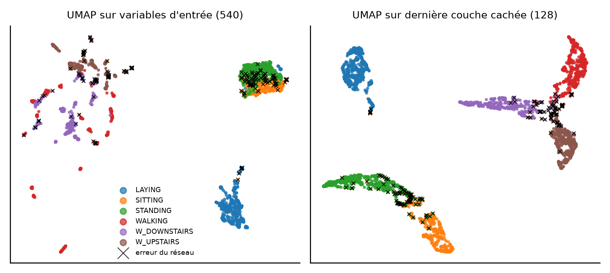

La reconnaissance d'activité à partir de capteurs inertiels est un problème où les variables, déjà calculées sur des fenêtres de signal, sont très informatives. La question posée ici n'est pas d'obtenir le meilleur score, mais de savoir à quel point un réseau plus gros ou mieux régularisé aide réellement, et de ne pas se tromper en lisant les chiffres. Deux pièges guident la méthode. D'abord, les fenêtres consécutives d'un même volontaire se chevauchent et se ressemblent : un découpage aléatoire des lignes mesure surtout de la mémorisation. Ensuite, avec peu de volontaires et des entraînements aléatoires, de petits écarts de score ne sont pas fiables. On procède donc par étapes (régression logistique, une couche cachée, plusieurs couches, régularisation), en répétant chaque comparaison importante et en n'utilisant le test qu'une fois, à la fin.
Données. Le jeu HAR (Anguita et al., 2013) contient des fenêtres de 2,56 s (recouvrement de 50 %) décrites par 561 variables, pour six classes : WALKING, WALKING_UPSTAIRS, WALKING_DOWNSTAIRS, SITTING, STANDING, LAYING. Le fichier d'entraînement compte 7352 fenêtres de 21 volontaires, le test 2947 fenêtres de 9 autres volontaires. Les classes sont assez équilibrées (rapport 1,43 entre la plus fréquente et la plus rare). Il n'y a ni valeur manquante, ni doublon de ligne ; toutes les variables sont dans [−1, 1] mais avec des moyennes et écarts-types très différents.
Prétraitement. On retire 21 colonnes qui sont des copies exactes d'une autre (540 variables restantes) et la colonne subject, qui n'est pas une mesure. Les variables sont standardisées avec une moyenne et un écart-type calculés sur l'entraînement seul.
Découpage. Cinq volontaires (1, 3, 15, 25, 27, tirés avec une graine fixée) forment la validation : 5551 fenêtres d'entraînement (16 volontaires) et 1801 de validation. Pour une même régression logistique, le découpage aléatoire donne 0,9851 ± 0,0013 de validation contre 0,9589 par volontaire, et 0,9535 sur le test : l'écart avec le test est de 3,3 points pour le découpage aléatoire contre 0,54 point par volontaire, donc seule la validation par volontaire est utilisable. Elle reste fragile : sur 10 tirages de 5 volontaires, l'accuracy de la régression logistique varie de 0,862 à 0,963 (0,930 ± 0,037), et le tirage retenu est parmi les plus favorables (2 tirages sur 10 font mieux).
Architectures. Tous les MLP sont des empilements Linear → activation, terminés par une couche linéaire à 6 sorties (perte d'entropie croisée). On fait varier la largeur de la couche cachée (16 à 512 neurones), le nombre de couches cachées (2 à 4, largeur 128), les activations (ReLU, Tanh, Sigmoid, et des mélanges) et la régularisation (dropout p ∈ {0,1 ; 0,3 ; 0,5}, weight decay de 10−5 à 10−2, Batch Normalization, LayerNorm, arrêt précoce). Le nombre de paramètres d'une couche cachée de n neurones est 547 n + 6 ; chaque couche supplémentaire de 128 neurones en ajoute 16 512 ; la normalisation ajoute 2 × 128 par couche (Tableau 1). Avant tout entraînement, la perte initiale mesurée (1,79 ± 0,02) est conforme à ln 6, et un réseau sait surapprendre un lot de 32 fenêtres (100 %).
Entraînement. Adam (pas 3·10−4 pour les réseaux ReLU/Tanh), mini-batches de 64, 30 époques ; pour les trois optimiseurs (SGD, SGD avec momentum, Adam) et trois activations, le pas a été réglé sur une grille logarithmique sans qu'aucun choix tombe au bord de la grille. Arrêt précoce : patience de 8 époques sur le F1 macro de validation (maximum 100 époques), poids de la meilleure époque restaurés. Chaque configuration est entraînée avec 5 graines (0 à 4) et on donne la moyenne ± écart-type (n−1). Règle de lecture : un écart est jugé « net » s'il dépasse deux fois le plus grand écart-type des deux configurations ; ce n'est pas un test statistique, juste un garde-fou avec 5 graines. Le test n'est évalué qu'une fois par modèle, en fin de projet.
| Modèle | Paramètres | Accuracy | F1 macro | Écart |
|---|---|---|---|---|
| Régression logistique | 3 246 | 0,9589 | 0,9552 | 3,75 |
| 1 couche, 16 neurones (ReLU) | 8 758 | 0,9540 ± 0,0021 | 0,9499 ± 0,0025 | 3,04 |
| 1 couche, 64 neurones (ReLU) | 35 014 | 0,9556 ± 0,0047 | 0,9520 ± 0,0050 | 3,49 |
| 1 couche, 128 neurones (ReLU) | 70 022 | 0,9592 ± 0,0030 | 0,9561 ± 0,0032 | 3,62 |
| 1 couche, 512 neurones (ReLU) | 280 070 | 0,9622 ± 0,0032 | 0,9588 ± 0,0035 | 3,74 |
| 1 couche, 64 neurones (Sigmoid, pas 3·10−3) | 35 014 | 0,9647 ± 0,0046 | 0,9616 ± 0,0048 | 3,52 |
| 2 couches × 128 (ReLU) | 86 534 | 0,9578 ± 0,0058 | 0,9542 ± 0,0065 | 3,9 |
| 3 couches × 128 (ReLU), sans régularisation | 103 046 | 0,9545 ± 0,0041 | 0,9507 ± 0,0046 | 4,03 |
| 4 couches × 128 (ReLU) | 119 558 | 0,9570 ± 0,0070 | 0,9538 ± 0,0079 | 3,88 |
| 4 couches × 128 (Sigmoid) | 119 558 | 0,4880 ± 0,1859 | 0,3330 ± 0,2167 | — |
| 3 couches + weight decay 10−4 | 103 046 | 0,9561 ± 0,0036 | 0,9525 ± 0,0037 | 3,98 |
| 3 couches + dropout 0,1 | 103 046 | 0,9670 ± 0,0055 | 0,9648 ± 0,0060 | 3,23 |
| 3 couches + Batch Normalization | 103 814 | 0,9667 ± 0,0054 | 0,9648 ± 0,0064 | 3,05 |
| 3 couches + LayerNorm | 103 814 | 0,9621 ± 0,0055 | 0,9580 ± 0,0064 | 3,79 |
| 3 couches + dropout 0,3 + arrêt précoce | 103 046 | 0,9723 ± 0,0036 | 0,9703 ± 0,0039 | 1,60 |
Avec une couche cachée, les neuf combinaisons d'activation et d'optimiseur donnent entre 0,953 et 0,965 de validation ; aucune des sept comparaisons faites avec 5 graines n'est nette (au plus 0,91 point pour un seuil de 0,95). L'écart-type dû à la graine est de 0,2 à 0,7 point, alors que celui dû au choix des volontaires de validation est de 3,7 points. Augmenter la largeur de 16 à 512 neurones multiplie les paramètres par 32 et fait monter l'accuracy d'entraînement de 98,5 % à 99,96 %, mais la validation reste entre 0,954 et 0,962 (aucune taille n'est nettement différente de 64 neurones) ; ce qui croît nettement est l'écart de perte validation − entraînement (0,069 à 0,104). Aller plus profond ne change rien non plus : de 1 à 4 couches ReLU, les écarts avec le réseau à une couche sont de −0,5 à +0,2 point pour des seuils de 0,8 à 1,4 point ; les combinaisons d'activations ne se distinguent pas. Seul résultat net : Sigmoid à 4 couches n'apprend pas (accuracy d'entraînement 0,48, validation de 0,32 à 0,69 selon la graine), y compris avec un pas dix fois plus grand (0,60 en entraînement). L'explication la plus probable est l'affaiblissement des gradients à travers les sigmoïdes, mais elle n'a pas été vérifiée directement.
Le réseau de référence à 3 couches surapprend (99,5 % en entraînement, 95,5 % en validation ; Figure 1). Par rapport à lui, dropout 0,1 (+1,25 point), dropout 0,5 (+1,20), Batch Normalization (+1,22), dropout 0,3 + weight decay (+1,09) et dropout 0,3 + arrêt précoce (+1,79) sont nets, soit 5 comparaisons sur 13 ; les autres (dropout 0,3 seul : +1,00 pour un seuil de 1,08 ; arrêt précoce seul : +0,78 pour 0,82) sont à la limite, et le weight decay n'a aucun effet (−0,2 à +0,2). Le sens est cohérent, mais avec 13 comparaisons quelques « nettes » peuvent venir du hasard. Côté stabilité, la Batch Normalization rend l'entraînement plus irrégulier d'une époque à l'autre (fluctuation de 0,80 point contre 0,37 sans normalisation) et plus lent (2,9 s contre 1,9 s) ; LayerNorm fluctue comme la référence (0,34) mais n'améliore pas la validation (+0,77 point, seuil 1,09 ; contre Batch Normalization −0,46, seuil 1,09) et atteint 100 % en entraînement. Sans régularisation, la perte de validation est minimale à l'époque 15 (0,119) puis remonte (0,162 à l'époque 30) ; avec dropout 0,1 ou Batch Normalization, elle remonte moins. La perte de validation remonte alors que l'accuracy de validation ne baisse pas : lecture proposée, le réseau devient trop confiant sur ses erreurs sans en faire davantage.

Les trois configurations retenues sur la validation de la partie 4 (dropout 0,3 + arrêt précoce, dropout 0,1, Batch Normalization), trois réseaux à une couche retenus en 2.3 et 3.1, le réseau de référence à 3 couches et la régression logistique ont été évalués une seule fois sur le test (Tableau 2, Figure 2).
| Modèle | Accuracy val. | Accuracy test | Écart | F1 macro test |
|---|---|---|---|---|
| Régression logistique | 0,9589 | 0,9535 | 0,54 | 0,9530 |
| 3 couches + Batch Normalization | 0,9667 ± 0,0054 | 0,9482 ± 0,0054 | 1,85 | 0,9484 ± 0,0052 |
| 1 couche, Sigmoid 64 | 0,9647 ± 0,0046 | 0,9469 ± 0,0012 | 1,78 | 0,9466 ± 0,0012 |
| 1 couche, 512 (ReLU) | 0,9622 ± 0,0032 | 0,9458 ± 0,0019 | 1,65 | 0,9454 ± 0,0018 |
| 1 couche, 128 (ReLU) | 0,9592 ± 0,0030 | 0,9427 ± 0,0024 | 1,66 | 0,9422 ± 0,0023 |
| 3 couches + dropout 0,1 | 0,9670 ± 0,0055 | 0,9407 ± 0,0044 | 2,63 | 0,9399 ± 0,0043 |
| 3 couches + dropout 0,3 + arrêt précoce | 0,9723 ± 0,0036 | 0,9406 ± 0,0008 | 3,17 | 0,9399 ± 0,0008 |
| 3 couches, sans régularisation | 0,9545 ± 0,0041 | 0,9379 ± 0,0023 | 1,66 | 0,9367 ± 0,0023 |
| Rég. logistique, découpage aléatoire | 0,9851 ± 0,0014 | 0,9520 ± 0,0018 | 3,32 | 0,9519 ± 0,0018 |

Aucun réseau ne dépasse la régression logistique. Le classement de la validation ne se retrouve pas : la configuration première en validation (0,9723) est avant-dernière en test (0,9406) et a le plus grand écart (3,2 points). L'arrêt précoce choisit son époque avec la validation elle-même, donc son score de validation est optimiste. Les gains de la régularisation, de +1 à +1,8 point en validation, ne représentent plus que +0,3 point (dropout) à +1,0 point (Batch Normalization) en test par rapport au réseau à 3 couches non régularisé. L'écart entre Batch Normalization et régression logistique (0,53 point) reste sous deux fois l'écart-type de la Batch Normalization (1,1 point), donc il n'est pas net ; en revanche, les trois réseaux à une couche sont nettement sous la régression logistique (0,7 à 1,1 point, pour des écarts-types de 0,1 à 0,2 point). Avec 9 volontaires de test, on conclut seulement que les réseaux n'ont pas montré de gain sur ces données avec cette méthode, pas que la régression logistique est meilleure en général.
Réseau et régression logistique se trompent aux mêmes endroits (Figure 3) : SITTING est pris pour STANDING dans 12,2 % des cas (STANDING pour SITTING : 4,9 %), WALKING_DOWNSTAIRS pour WALKING_UPSTAIRS dans 5,5 % et WALKING_UPSTAIRS pour WALKING dans 4,3 % ; LAYING est presque parfaite (F1 0,993). Les F1 les plus bas sont SITTING (0,905) et STANDING (0,917). C'est plausible : assis et debout sont deux postures immobiles où l'accélération due au mouvement est quasi nulle, et seule la direction de la gravité, donc l'inclinaison du téléphone, les distingue ; allongé la change complètement. Les trois marches produisent des signaux périodiques qui ne diffèrent que par l'intensité et la composante verticale. C'est une interprétation cohérente avec les mesures, pas une démonstration.

Les activations de la dernière couche cachée (128 dimensions, réseau de la graine 0, 175 erreurs sur 2947) et les 540 variables d'entrée ont été projetées en 2D sur les 2947 fenêtres de test (Figure 4). Dans l'entrée, SITTING et STANDING forment une même région et les marches de petits amas dispersés ; dans la couche cachée, chaque activité est un groupe compact (silhouette dans l'espace complet : 0,042 pour l'entrée, 0,547 pour la couche cachée), et les erreurs se placent à la frontière SITTING/STANDING et à la jonction des trois marches. La corrélation de rang (Spearman) entre le mélange des classes dans le plan et le taux de confusion est de 0,67 pour t-SNE comme pour UMAP. Précautions : la part de voisins de la bonne classe est presque identique en entrée et en couche cachée (94,5 % contre 94,0 %, t-SNE) et peut être gonflée par des fenêtres consécutives du même volontaire ; la silhouette 2D du t-SNE varie de 0,33 à 0,60 selon la perplexité (5 à 100) ; trois graines donnent le même niveau (0,486 à 0,493) mais des dessins différents ; la séparation visuelle SITTING/STANDING change avec n_neighbors. Ni les distances entre groupes ni leurs positions ne sont donc interprétables.

Sur la validation, on mélange entre fenêtres un groupe de variables (mêmes permutations pour tout le groupe, 5 mélanges, 5 graines, réseau dropout 0,3 + arrêt précoce) et on mesure la baisse d'accuracy. La composante de gravité de l'accéléromètre (GravityAcc, 40 variables) domine : −32,1 points (± 1,3), contre −9,7, −7,8 et −7,4 points pour BodyAcc, BodyAccJerk et BodyGyro (119 variables chacun). Mélanger GravityAcc fait chuter le F1 de SITTING de 47 points et celui de STANDING de 28 points, ce qui va dans le sens de l'explication de 4.4. Par capteur : accéléromètre −70,8 points contre gyroscope −21,4 ; par domaine : temps −60,4, fréquence −29,0 (en partie le même résultat, la gravité n'existant que dans le domaine temps). Limites : le mélange crée des combinaisons de variables irréalistes, les variables sont corrélées et un gros groupe détruit plus d'information qu'un petit ; une forte baisse montre que le réseau utilise un groupe, pas qu'il a raison de le faire.
Ce que les données soutiennent. (i) Un MLP à une couche cachée ne fait pas nettement mieux qu'un modèle linéaire sur ces variables déjà très informatives ; (ii) plus de neurones ou de couches augmente le surapprentissage sans gain de validation ; (iii) dropout et Batch Normalization réduisent l'écart entraînement-validation, mais leur bénéfice sur de nouveaux volontaires est faible et incertain. Ce qu'elles ne soutiennent pas. La validation sur 5 volontaires est optimiste (tirage favorable, 0,930 ± 0,037 sur 10 tirages) et la sélection sur ces 5 personnes ajuste les choix à elles, d'où des écarts validation−test de 1,7 à 3,2 points pour les réseaux, les plus grands concernant les modèles qui avaient les meilleures validations (dropout, arrêt précoce). Rien ne permet de séparer cet effet de sélection de celui d'un jeu de test plus difficile : avec 9 personnes, un écart sous 1 point entre deux modèles peut venir du choix des personnes. Une validation croisée par volontaire serait la correction naturelle, non faite ici faute de temps. Limites supplémentaires. Seul le pas d'apprentissage a été réglé (grille logarithmique) ; aucune recherche automatique d'hyperparamètres n'a été faite (elle s'ajusterait aux mêmes 5 volontaires) ; les signaux bruts (réseaux convolutifs ou récurrents) n'ont pas été traités ; les explications par les capteurs et par l'affaiblissement des gradients restent des hypothèses.
Sur HAR, la validation par volontaire est indispensable (le découpage aléatoire surestime de 2,6 points), mais même elle, avec 5 volontaires, varie plus (±3,7 points) que les effets étudiés. Les gains attribués à la profondeur sont nuls, ceux de la régularisation sont réels en validation (+0,8 à +1,8 point) mais presque absents en test, et la régression logistique (3 246 paramètres, 0,9535) reste la référence à battre. Les erreurs résiduelles sont celles que suggèrent les capteurs (postures immobiles, marches), et la gravité est le signal le plus exploité par le réseau. La leçon méthodologique est que le classement obtenu en validation n'a pas résisté au test.
Usage. Un assistant d'IA générative (Claude Code, Anthropic) a été utilisé comme outil de programmation et de rédaction : il a écrit le code des deux notebooks sous ma direction, étape par étape, et m'a aidée à organiser les notebooks et ce rapport. Les choix de protocole (validation par volontaire, 5 graines, règle des deux écarts-types, test utilisé une fois) ont été discutés avec lui et validés par moi. Le résumé de lecture sur t-SNE et UMAP (partie 6.1) a été rédigé de mémoire, sans relire les articles originaux, et la bibliographie ci-dessous est à vérifier contre les sources.
Vérification des résultats. (1) Tous les chiffres de ce rapport viennent des sorties des notebooks exécutés, relues une à une. (2) Les modèles clés (référence à 3 couches, dropout 0,1, Batch Normalization, dropout 0,3 + arrêt précoce, régression logistique) ont été réentraînés hors des notebooks avec le même code : on retrouve les mêmes moyennes et écarts-types, en validation comme en test, et les mêmes nombres de paramètres. Ce réentraînement servait uniquement à vérifier la reproductibilité, aucun choix n'en a découlé (le réseau à une couche de 128 neurones, évalué sur le test dans les deux notebooks, y donne les mêmes scores). (3) Cette relecture a fait corriger six erreurs de texte dans les notebooks (temps d'entraînement mal reportés, deux renvois de section, une phrase ambiguë, deux tableaux d'avancement). (4) Les variations de réglage (perplexité, graines, n_neighbors) et la règle des deux écarts-types servent à ne pas surinterpréter les écarts ; les explications causales (capteurs, gradients) sont présentées comme des hypothèses. Le code et les notebooks sont fournis avec ce rapport.
Anguita, D., Ghio, A., Oneto, L., Parra, X., Reyes-Ortiz, J. L. (2013). A public domain dataset for human activity recognition using smartphones. ESANN.
Ba, J. L., Kiros, J. R., Hinton, G. E. (2016). Layer normalization. arXiv:1607.06450.
Ioffe, S., Szegedy, C. (2015). Batch normalization: accelerating deep network training by reducing internal covariate shift. ICML.
Kingma, D. P., Ba, J. (2015). Adam: a method for stochastic optimization. ICLR.
McInnes, L., Healy, J., Melville, J. (2018). UMAP: uniform manifold approximation and projection for dimension reduction. arXiv:1802.03426.
Srivastava, N., Hinton, G., Krizhevsky, A., Sutskever, I., Salakhutdinov, R. (2014). Dropout: a simple way to prevent neural networks from overfitting. JMLR, 15.
van der Maaten, L., Hinton, G. (2008). Visualizing data using t-SNE. JMLR, 9.